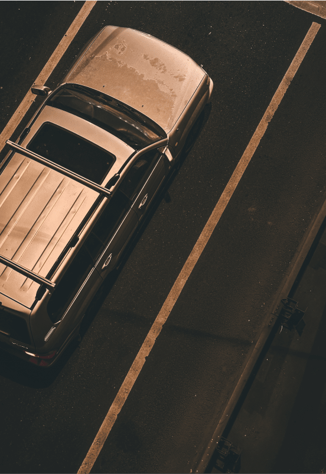
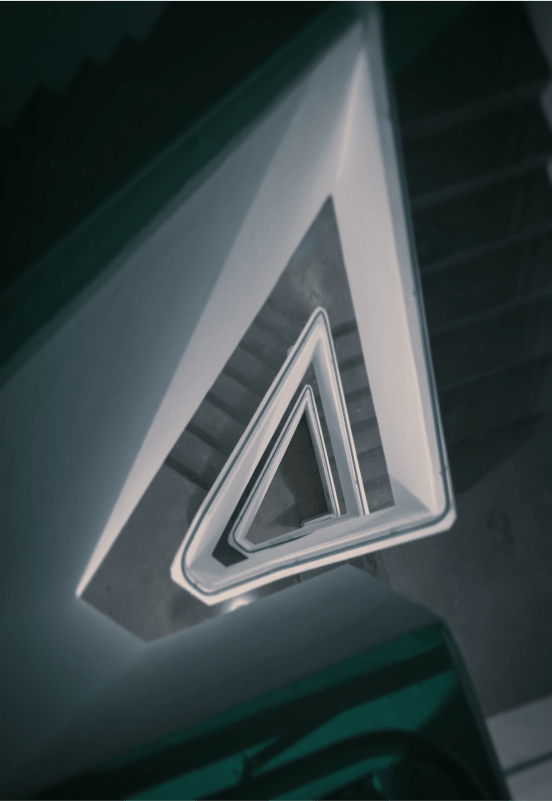
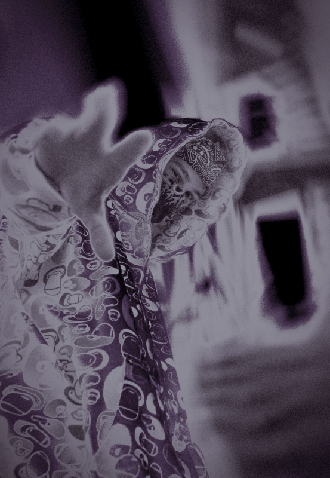
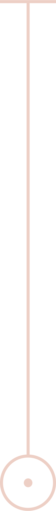
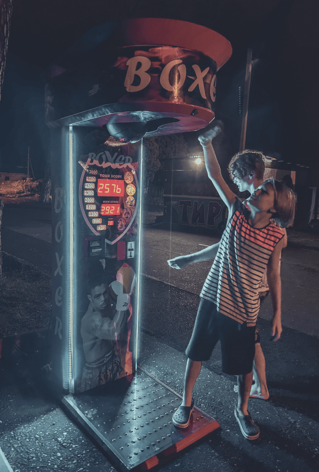

площадка

В этом разделе мы собрали лучшие ответы
на важные вопросы и аспекты фотографии:
Что такое плёночная фотография?
Как фоткать на камеру телефона, чтобы
приблизиться к профессиональной оптике?Какие приложения можно использовать
для контроля всех показателей камеры на телефоне?Как использовать нейросети для фотографии?
Какие объективы использовать?
Как настроить камеру?
Где проявить плёнку?
позы
У начинающих часто возникает проблема с позой
и естественной улыбкой, все практические советы:
Как встать на конкретной локации?
Куда деть руки?
Как создать глубину за счёт позы?
Как сделать естественную фотографию?
лайфхаки



Универсальная площадка лoka. На нашем сервисе
собраны лучшие места твоего города с примерами
реализации фотографий в локации, пресетами для
неё, позами и другими фишками.
пресеты
Библиотека готовых уникальных пресетов
для ваших фотографий. Удобные фильтры поиска
по времени года, времени суток, погоде, настроению
и многим другим параметрам.
